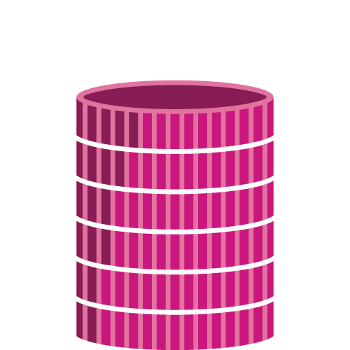
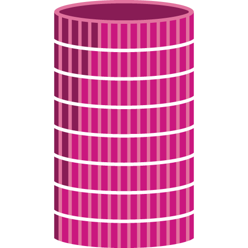
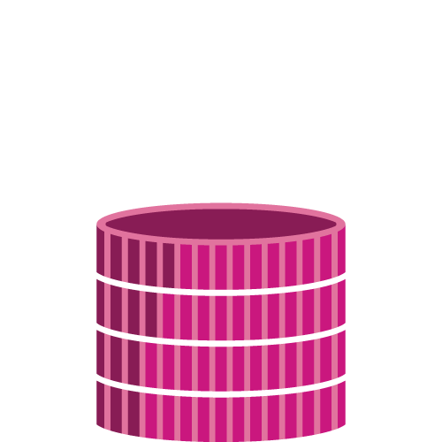

Graduates are surveyed each year about their experiences at NOVA. Recent graduates mentioned the benefits they saw by attending NOVA before transferring to a four-year college or university.
THE TRANSFER STUDENT TRANSITION
UNDERSTANDING THE EXPERIENCE FOR COMMUNITY COLLEGE STUDENTS
Community colleges across the U.S. provide millions of studetns with the opportunity to attend college and learn skills that are critical for employment in today’s economy. This strengthens both individuals and the community served by two-year colleges.
NOVA enrolls over 70,000 students each year. Students choose NOVA over four-year universities for many reasons: to explore areas of study, take general education requirements, or save money. After earning an Associate’s degree at NOVA, many students aim to transfer to four-year university to continue their studies. NOVA provides structured support for any student who wishes to pursue this path. Counselors and advisors are avilable to help students to navigate this process, working to ensure a successful transition.
BY THE NUMBERS
7 MILLION
community college undergraduates
8 IN 10
community college
students intend to earn a
bachelor’s degree.
49%
of all bachelor’s degree
graduates nationwide attended
community college in
the last 10 years
Tuition and fees at
community colleges average only
36.2%
of the average
four-year public college
tuition and fee bill.
by 2020
65%
of jobs will require
an associate’s degree or higher.
by 2020
33%
of jobs will require some college,
an associate’s degree,
or a postsecondary
vocational certi cate.
WHY NOVA
“I wasn’t ready to attend a four-year university when I graduated high school. NOVA helped me prepare for that and made me feel ready when I transferred.”
“I was able to achieve a good education with transferable credits to a four-year university.”
“I was able to fulfill a lot of requirements and prerequisites that were then transferred.”
“I saved a lot of money, and my general education credits were waived when I transferred to James Madison University.”
beyond nova
The majority of transfer students from NOVA enroll in one of these four-year universities.
George Mason University
Virginia Commonwealth University
James Madison University
Hard Working Students

56%
of students receive some form of financial aid
38%
of students receive Pell grants

75%
of students are employed

52%
of students work more than 20 hours a week
monthly choices
Food insecure students must make choices on how to spend their money, often making the difficult decision between food and school-related expenses.
$169
average monthly cost of food for a single adult
average monthly cost of food for a single adult
United Way. Asset Limited, Income Constrained, Employed. 2017
OR
$225
monthly public transportation costs
monthly public transportation costs
United Way. Asset Limited, Income Constrained, Employed. 2017
$183
cost of one credit hour
at NOVA
$328
cost of a single textbook
cost of a single textbook
The College Board. https://trends.collegeboard.org/college-pricing/figures- tables/average-estimated-undergraduate-budgets-2016-17. 2016
Learn More
Counselors and advisors available to all students on each NOVA campus. NOVA counselors can offer guidance in not only the transfer process, but in areas such as career advice, disability, and retention.
The advising relationship is a continual and evolving process created through communication between students, faculty, and staff. Counseling assists students with the transition to college and will ensure that students are on the right track to achieve their academic, career, and personal goals.
The advising relationship is a continual and evolving process created through communication between students, faculty, and staff. Counseling assists students with the transition to college and will ensure that students are on the right track to achieve their academic, career, and personal goals.
ON-CAMPUS RESOURCES
Counselors are available to help NOVA students navigate their coursework and the transfer process. Hours vary for each campus; visit www.nvcc.edu/advising for details.
① Alexandria: AA194 (ALCounseling@nvcc.edu)
② Annandale: CA105 (ANCounseling@nvcc.edu)
③ Loudoun: LR253 (LOCounseling@nvcc.edu)
④ Manassas: MH110 (MAcouns@nvcc.edu)
⑤ MEC: HE202 (MECcounselor.nvcc.edu)
⑥ Woodbridge: WC202 (WOCounseling@nvcc.edu)
4 SEMESTERS BEFORE TRANSFER
Speak with a transfer counselor to declare your major.
Learn more about the Guaranteed Admissions program and view special agreements NOVA has with four-year colleges and universities.
Familiarize yourself with the general curriculum needed at your top transfer schools. Be sure to begin your math and writing classes as early as possible.
3 SEMESTERS BEFORE TRANSFER
Continue meeting with your transfer counselor or academic advisor to stay on track towards graduation.
Decide on your preferred schools and plan campus visits.
Stay updated on curriculum requirements, calendars, and deadlines for your preferred schools.
Complete a letter of intent, if required.
2 SEMESTERS BEFORE TRANSFER
Submit your admissions applications to your preferred schools.
Apply for scholarships, financial aid, and housing at your transfer school. Be sure to look into the Virginia Two-Year College Transfer Grant.
Continue selecting courses required for transfer.
1 SEMESTERS BEFORE TRANSFER
Complete all required coursework in your program.
Apply for graduation.
Check your myNOVA account to verify there are no holds to prevent you from graduating.